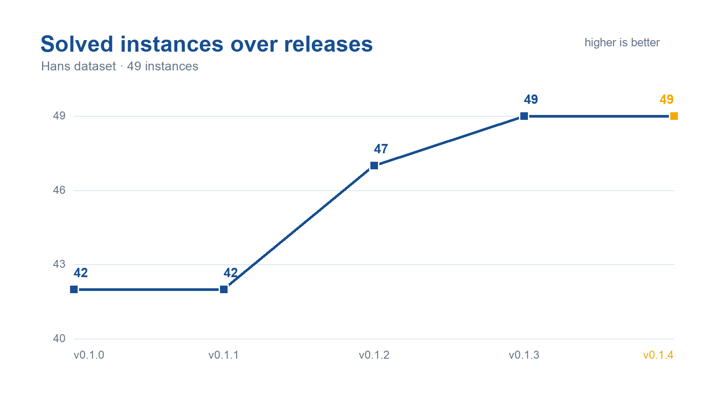
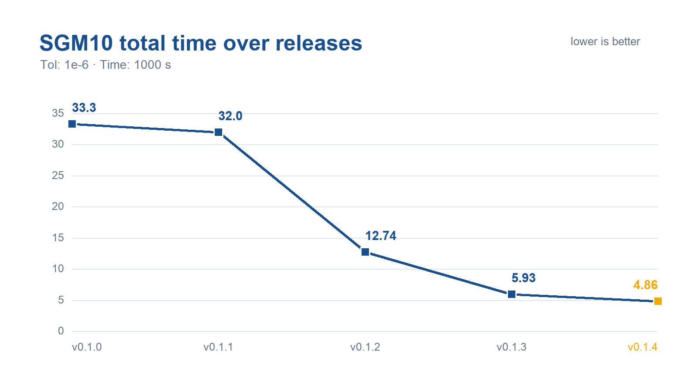

Benchmarks
Mittelmann LPfeas main benchmark
The following tables contain the same results as the homepage. The HPR-LP-C results are for v0.1.4. SGM10 is reported in seconds; lower is better.
65 instances. CPU and GPU results use their respective test platforms. Relative values use the lowest SGM10 in this table, 8.02 s, as the baseline.
Solver |
Type |
SGM10 (s) |
Relative |
Solved |
|---|---|---|---|---|
HPR-LP-C |
GPU |
10.8 |
1.35 |
63 / 65 |
COPT-H* |
GPU |
8.02 |
1.00 |
64 / 65 |
cuOpt* |
GPU |
10.9 |
1.36 |
62 / 65 |
cuPDLPx |
GPU |
28.5 |
3.55 |
57 / 65 |
COPT |
CPU |
25.3 |
3.15 |
65 / 65 |
MOSEK |
CPU |
89.2 |
11.12 |
56 / 65 |
HiGHS |
CPU |
256 |
31.92 |
55 / 65 |
KNITRO |
CPU |
372 |
46.38 |
48 / 65 |
PDLP |
CPU |
421 |
52.49 |
50 / 65 |
XOPT |
CPU |
146 |
18.20 |
59 / 65 |
* These configurations combine CPU and GPU computation or run multiple solver methods concurrently.
Large-scale addendum
20 large-scale instances; single-GPU comparison. Relative values use HPR-LP-C’s SGM10 as the baseline.
Solver |
SGM10 (s) |
Relative |
Solved |
|---|---|---|---|
HPR-LP-C |
272.45 |
1.00 |
18 / 20 |
cuOpt* |
1,376.58 |
5.05 |
13 / 20 |
COPT-H* |
2,190.48 |
8.04 |
6 / 20 |
* These configurations combine CPU and GPU computation or run multiple solver methods concurrently.
Source: H. Mittelmann, LPfeas Benchmark & Addendum, published 25 October 2026; homepage snapshot accessed 11 November 2026. The main benchmark and addendum are separate test sets.
HPR-LP-C performance over releases
These figures show the separate 49-instance Hans dataset experiment, with tolerance 1e-6 and a 1,000 s time limit. They illustrate progress from v0.1.0 through v0.1.4 and use a different test set from the tables above.


Solved instances over releases on the 49-instance Hans dataset.


SGM10 total time over releases, with tolerance 1e-6 and a 1,000 s time limit.